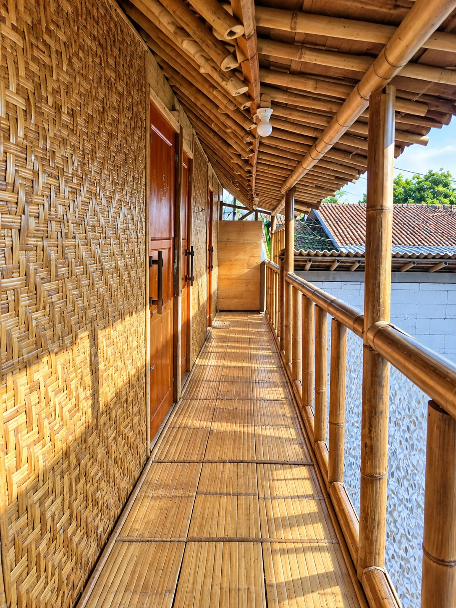
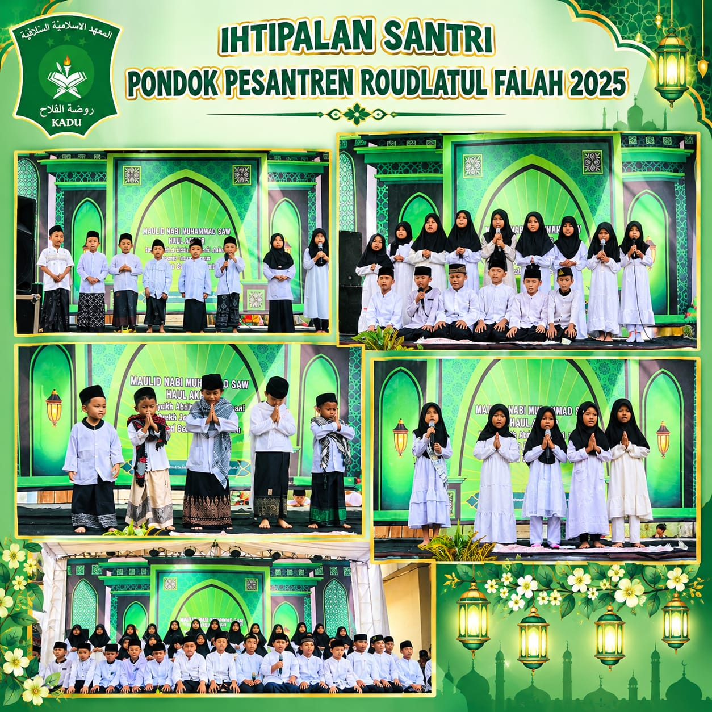
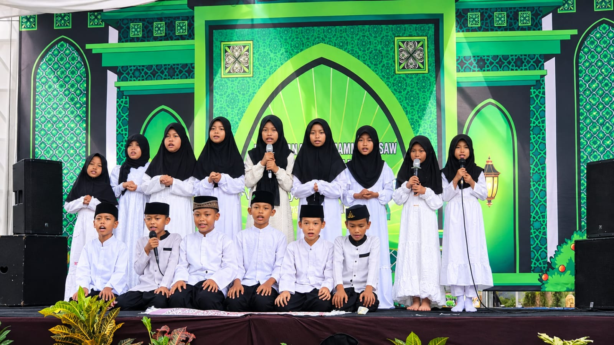
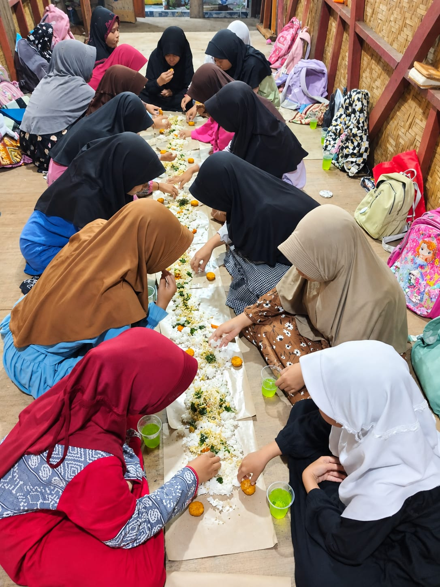
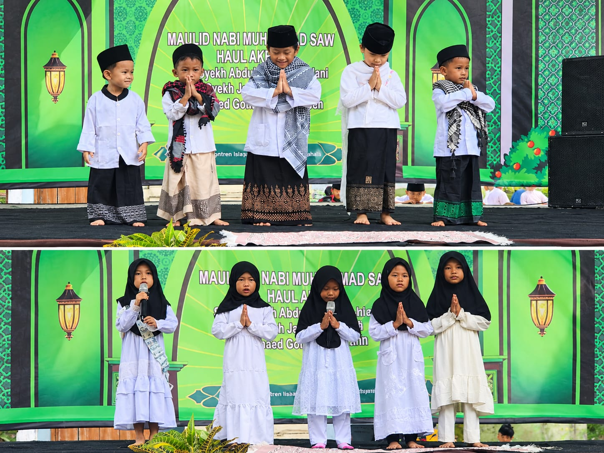
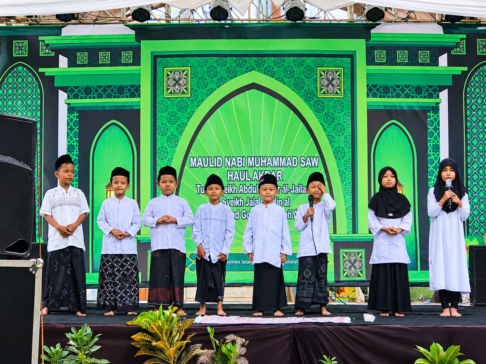
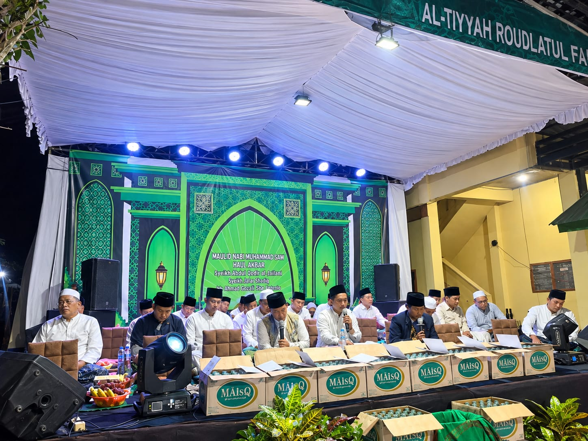
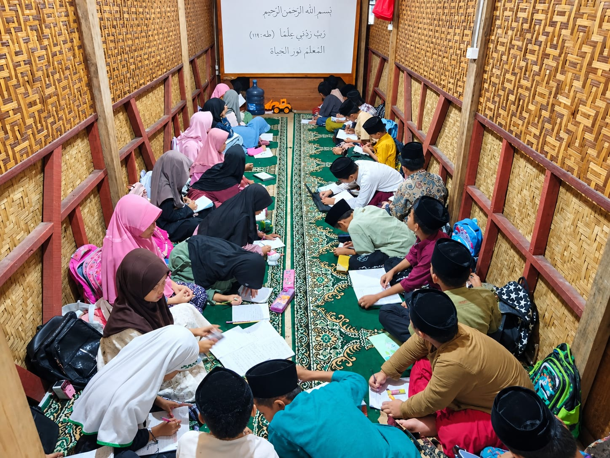

Membentuk generasi penerus yang berakhlakul karimah, mandiri, dan berpegang teguh pada nilai-nilai ajaran Islam Ahlussunnah wal Jama'ah.
Kenali Kami Lebih Dekat
Pondok Pesantren Roudlatul Falah adalah lembaga pendidikan Islam Salafiyah yang berdedikasi tinggi dalam mendidik santri melalui kajian kitab kuning, pembentukan adab, serta kemandirian.
Dengan fasilitas yang mengedepankan kesederhanaan dan kedekatan dengan alam, kami menciptakan lingkungan yang kondusif bagi para santri untuk fokus menuntut ilmu, beribadah, dan mempererat tali persaudaraan.
Momen kebersamaan, peringatan hari besar Islam, dan aktivitas belajar mengajar.






